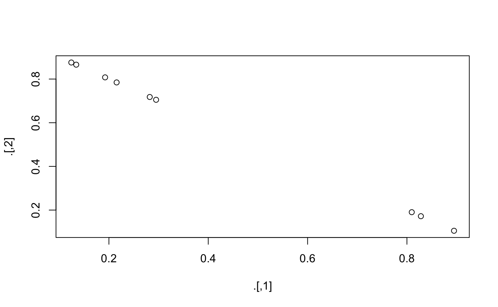

sklearn.RmdFirst we preprocess the corpus using example data, a tiny corpus of 9 documents. Reproducing the tutorial on corpora and vector spaces.
library(gensimr)
set.seed(42) # rerproducability
# sample data
data(corpus, package = "gensimr")
print(corpus)
#> [1] "Human machine interface for lab abc computer applications"
#> [2] "A survey of user opinion of computer system response time"
#> [3] "The EPS user interface management system"
#> [4] "System and human system engineering testing of EPS"
#> [5] "Relation of user perceived response time to error measurement"
#> [6] "The generation of random binary unordered trees"
#> [7] "The intersection graph of paths in trees"
#> [8] "Graph minors IV Widths of trees and well quasi ordering"
#> [9] "Graph minors A survey"
# preprocess corpus
docs <- prepare_documents(corpus)
#> → Preprocessing 9 documents
#> ← 9 documents after perprocessing
docs[[1]] # print first preprocessed document
#> [[1]]
#> [1] "human"
#>
#> [[2]]
#> [1] "interface"
#>
#> [[3]]
#> [1] "computer"Once preprocessed we can build a dictionary.
dictionary <- corpora_dictionary(docs)A dictionary essentially assigns an integer to each term.
doc2bow simply applies the method of the same name to every documents (see example below); it counts the number of occurrences of each distinct word, converts the word to its integer word id and returns the result as a sparse vector.
# native method to a single document
dictionary$doc2bow(docs[[1]])
#> [(0, 1), (1, 1), (2, 1)]
# apply to all documents
corpus_bow <- doc2bow(dictionary, docs)Then serialise to matrix market format, the function returns the path to the file (this is saved on disk for efficiency), if no path is passed then a temp file is created. Here we set auto_delete to FALSE otherwise the corpus is deleted after first use. Note this means you should manually delete it with delete_mmcorpus.
(corpus_mm <- serialize_mmcorpus(corpus_bow, auto_delete = FALSE))
#> ℹ Path: /var/folders/n9/ys9t1h091jq80g4hww24v8g0n7v578/T//RtmpUvFyt7/filed9a17bf749a.mm
#> ✔ Temp file
#> ✖ Delete after useThen initialise a model, we’re going to use a Latent Similarity Indexing method later on (model_lsi) which requires td-idf.
tfidf <- model_tfidf(corpus_mm)We can then use the model to transform our original corpus.
corpus_transformed <- wrap(tfidf, corpus_bow)hdp <- sklearn_hdp(id2word = dictionary)
vectors <- hdp$fit_transform(corpus_bow)lda <- sklearn_lda(
num_topics = 2L,
id2word = dictionary,
iterations = 20L,
random_state = 1L
)
lda$fit_transform(corpus_bow) %>%
reticulate::py_to_r() %>%
plot()
Create stages for our pipeline (including gensim and sklearn models alike).
lsi <- sklearn_lsi(id2word = dictionary, num_topics = 15L)
# L2 reg classifier
clf <- sklearn_logistic(penalty = "l2", C = 0.1, solver = "lbfgs")
# sklearn pipepline
pipe <- sklearn_pipeline(lsi, clf)
# Create some random binary labels for our documents.
labels <- sample(c(0L, 1L), 9, replace = TRUE)
# How well does our pipeline perform on the training set?
pipe$fit(corpus_bow, labels)$score(corpus_bow, labels)
#> 0.7777777777777778# initialise
rp_model <- sklearn_rp(id2word = dictionary)
# fit
rp_fit <- rp_model$fit(corpus_bow)
# Use the trained model to transform a document.
result <- rp_fit$transform(corpus_bow)# split phrases into vectors of words
# this should be further cleaned
corpus_split <- corpus %>%
purrr::map(strsplit, " ") %>%
purrr::map(function(x){
sentence <- x[[1]]
tolower(sentence)
})
# Create the model. Make sure no term is ignored and combinations seen 2+ times are captured.
pt_model <- sklearn_pt(min_count = 1, threshold = 2)
# Use sklearn fit_transform to see the transformation.
pt_trans <- pt_model$fit_transform(corpus_split)
# Since graph and minors were seen together 2+ times they are considered a phrase.
c("This", "is", "graph_minors") %in% reticulate::py_to_r(pt_trans)[[9]]
#> [1] FALSE FALSE TRUEdoc2bow with scikit-learn. Note that in the example below we do not clean the text (no preprocess).
# initialise
skbow_model <- sklearn_doc2bow()
# fit
corpus_skbow <- skbow_model$fit_transform(corpus)tfidf_model <- sklearn_tfidf(dictionary = dictionary)
tfidf_w_sklearn <- tfidf_model$fit_transform(corpus_bow)
# same as with gensim
corpus_transformed[[1]] == tfidf_w_sklearn[[1]]
#> [1] TRUE# Create a model to represent each word by a 10 dimensional vector.
w2v_model <- sklearn_word2vec(size = 10L, min_count = 1L, seed = 1L)
# train
w2v_model <- w2v_model$fit(docs)
# What is the vector representation of the word 'graph'?
w2v_model$transform(list("graph"))
#> [[ 0.02610787 -0.02108207 0.03802316 -0.01800626 -0.02913744 0.00531775
#> 0.03771292 0.00759818 0.01548491 0.02655359]]Clean up, delete the corpus.
delete_mmcorpus(corpus_mm)
#> ✔ Temp unlinked